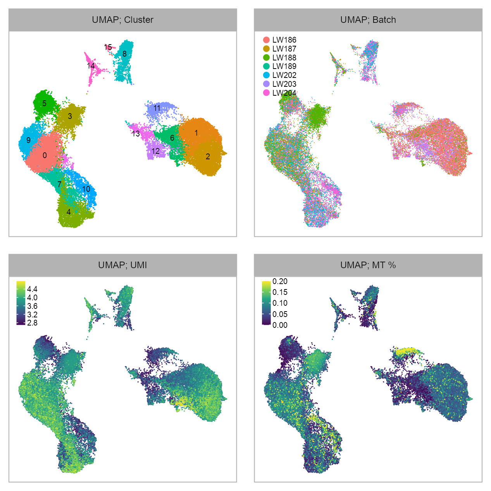
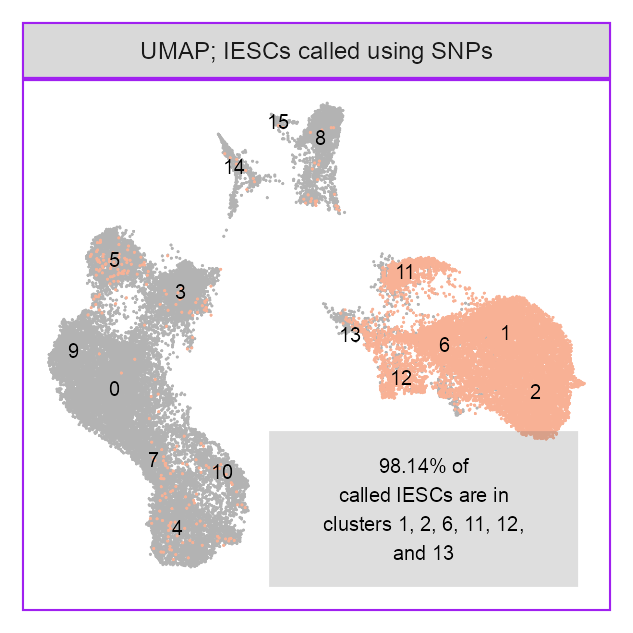
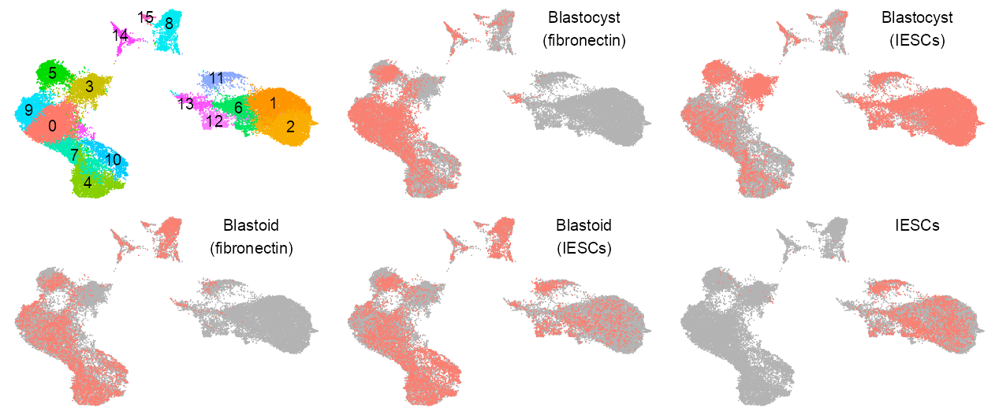
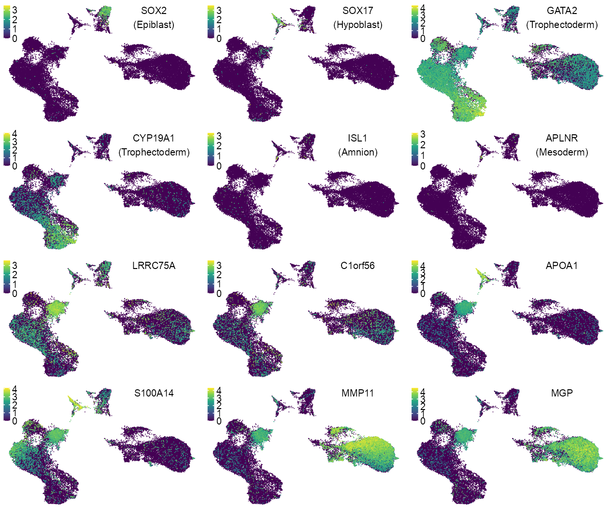
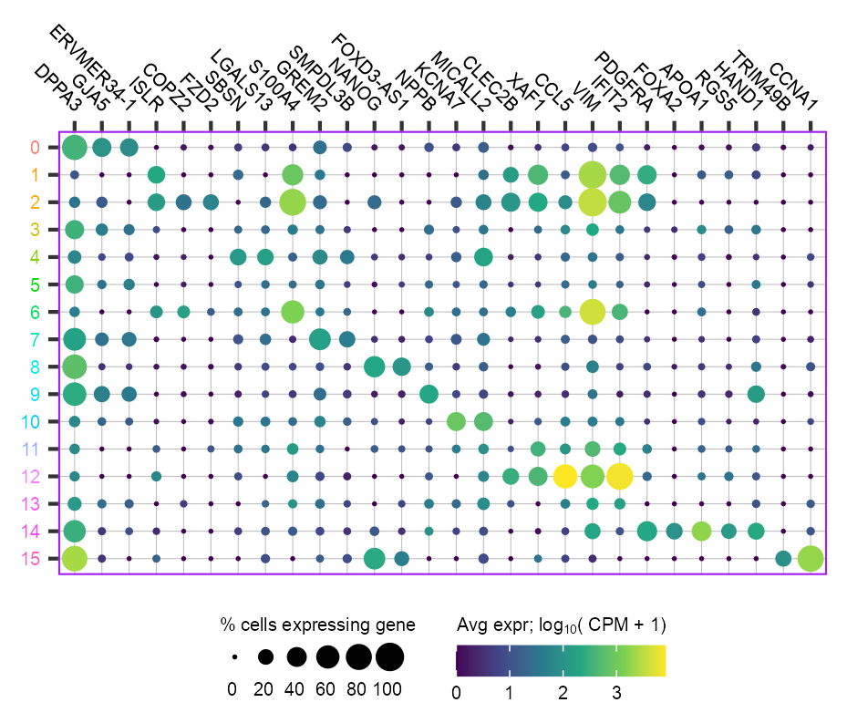
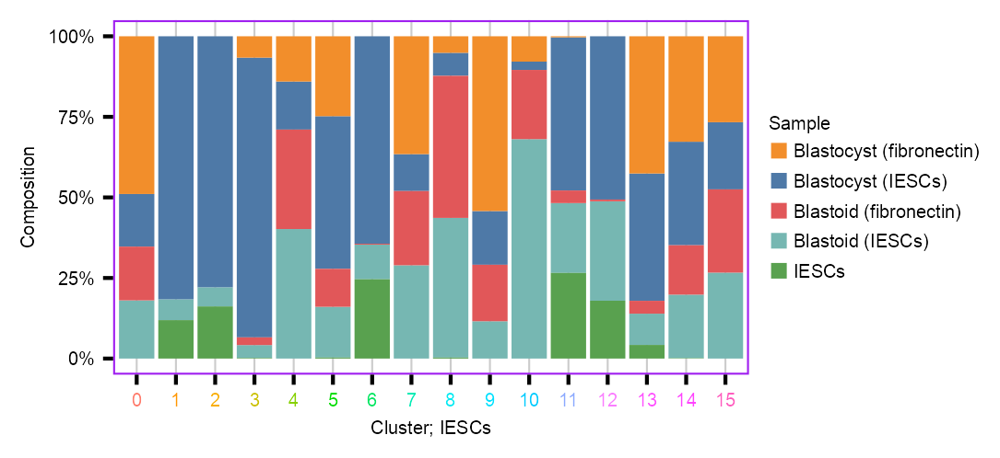
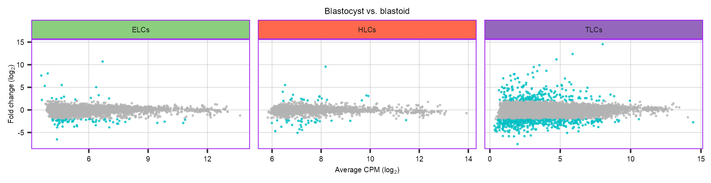
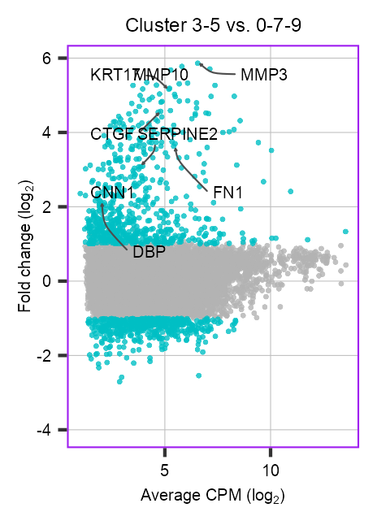
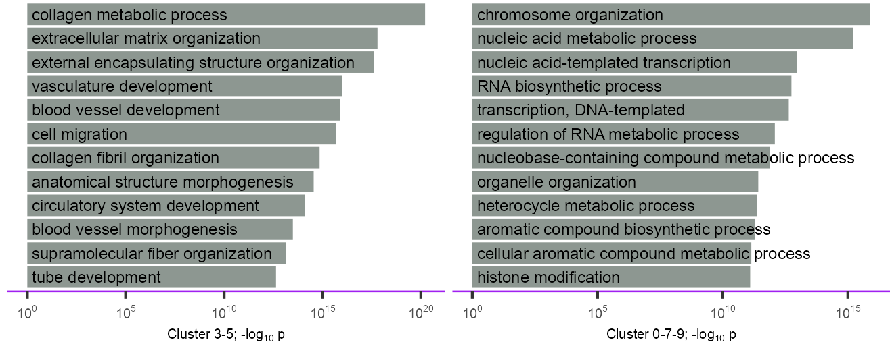
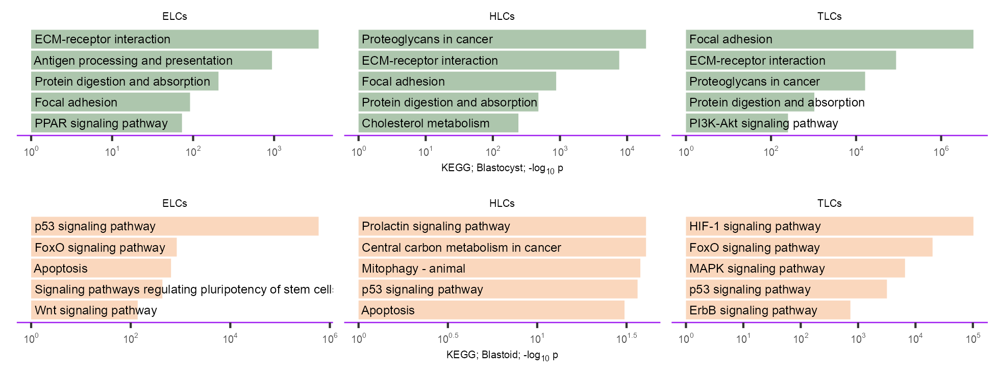

![]()
Sys.time()[1] "2023-09-10 03:27:17 CDT"Sys.time()[1] "2023-09-10 03:27:17 CDT"[1] "America/Chicago"PROJECT_DIR <- file.path(
"/Users/jialei/Dropbox/Data/Projects/UTSW/Peri-implantation"
)Load required packages.
library(tidyverse)
## ── Attaching core tidyverse packages ─────────────────── tidyverse 2.0.0.9000 ──
## ✔ dplyr 1.1.3 ✔ readr 2.1.4.9000
## ✔ forcats 1.0.0.9000 ✔ stringr 1.5.0.9000
## ✔ ggplot2 3.4.3.9000 ✔ tibble 3.2.1.9005
## ✔ lubridate 1.9.2.9000 ✔ tidyr 1.3.0.9000
## ✔ purrr 1.0.2.9000
## ── Conflicts ────────────────────────────────────────── tidyverse_conflicts() ──
## ✖ dplyr::filter() masks stats::filter()
## ✖ dplyr::lag() masks stats::lag()
## ℹ Use the conflicted package (<http://conflicted.r-lib.org/>) to force all conflicts to become errors
library(Matrix)
##
## Attaching package: 'Matrix'
##
## The following objects are masked from 'package:tidyr':
##
## expand, pack, unpack
library(patchwork)
library(extrafont)
## Registering fonts with R`%+replace%` <- ggplot2::`%+replace%`add_panel_border <- function() {
ggplot2::theme(
plot.background = element_rect(
colour = "grey70", fill = NA, linewidth = 0.25
)
)
}theme_customized_clear <- function() {
ggplot2::theme(
legend.background = ggplot2::element_blank(),
panel.background = ggplot2::element_blank(),
panel.grid.major = ggplot2::element_blank(),
panel.grid.minor = ggplot2::element_blank(),
#
plot.background = ggplot2::element_blank(),
# plot.background = element_rect(
# colour = "grey70", fill = NA, linewidth = 0.25
# ),
#
# axis.ticks.length = ggplot2::unit(0, "pt"),
panel.border = ggplot2::element_blank(),
plot.margin = ggplot2::unit(c(0, 0, 0, 0), "lines")
)
}np <- reticulate::import("numpy", convert = TRUE)
# scipy.sparse <- reticulate::import(module = "scipy.sparse", convert = TRUE)
cat("numpy version:", np$`__version__`, "\n")numpy version: 1.24.3 reticulate::py_config()python: /Users/jialei/.pyenv/shims/python
libpython: /Users/jialei/.pyenv/versions/mambaforge-22.9.0-3/lib/libpython3.10.dylib
pythonhome: /Users/jialei/.pyenv/versions/mambaforge-22.9.0-3:/Users/jialei/.pyenv/versions/mambaforge-22.9.0-3
version: 3.10.9 | packaged by conda-forge | (main, Feb 2 2023, 20:26:08) [Clang 14.0.6 ]
numpy: /Users/jialei/.pyenv/versions/mambaforge-22.9.0-3/lib/python3.10/site-packages/numpy
numpy_version: 1.24.3
numpy: /Users/jialei/.pyenv/versions/mambaforge-22.9.0-3/lib/python3.10/site-packages/numpy
NOTE: Python version was forced by RETICULATE_PYTHONembedding <- vroom::vroom(
file = file.path(
PROJECT_DIR,
"clustering",
"LW186_LW187_LW188_LW189_LW202_LW203_LW204",
"exploring",
CLUSTERING_METHOD,
EMBEDDING_FILE
),
show_col_types = FALSE
) |>
dplyr::mutate(
batch = dplyr::case_when(
batch == "GSM4734573" ~ "PRJNA658478",
TRUE ~ batch
),
bioproject = dplyr::case_when(
batch %in% c("LW60", "LW61") ~ "PRJNA632839",
#
batch %in% c("GSM3956280", "GSM3956281") ~ "PRJNA555602",
batch %in% c("GSM4734573") ~ "PRJNA658478",
#
batch %in% c(
"GSM4816780", "GSM4816781", "GSM4816782"
) ~ "PRJNA667174",
batch %in% c("GSM5387817", "GSM5387818") ~ "PRJNA738498",
TRUE ~ batch
)
)embedding_stromal <- vroom::vroom(
file = file.path(
PROJECT_DIR,
"clustering",
"LW186_LW187_LW188_LW189_LW202_LW203_LW204_stromal",
"exploring",
"Scanpy_Harmony_variable",
"embedding_ncomponents16_seed20210719.csv.gz"
),
show_col_types = FALSE
) |>
dplyr::mutate(
batch_annotated = dplyr::case_when(
batch %in% c("LW187", "LW189") ~ "Blastocyst (fibronectin)",
batch %in% c("LW186", "LW188") ~ "Blastocyst (stromal cells)",
batch %in% c("LW202") ~ "Blastoid (fibronectin)",
batch %in% c("LW203") ~ "Stromal cells",
batch %in% c("LW204") ~ "Blastoid (stromal cells)"
)
)adata_files <- c(
purrr::map(
c("LW186", "LW187", "LW188", "LW189", "LW202", "LW203", "LW204"), \(x) {
file.path(
PROJECT_DIR,
"raw",
x,
"matrix",
"adata.h5ad"
)
}
)
)
adata_files <- unique(adata_files)
purrr::map_lgl(adata_files, file.exists)[1] TRUE TRUE TRUE TRUE TRUE TRUE TRUEBACKED <- NULL
matrix_readcount_use <- purrr::map(adata_files, \(x) {
cat(x, "\n")
ad$read_h5ad(
filename = x, backed = BACKED
) |>
extract_matrix_from_adata(cells_selected = embedding$cell)
}) |>
purrr::reduce(cbind)/Users/jialei/Dropbox/Data/Projects/UTSW/Peri-implantation/raw/LW186/matrix/adata.h5ad
/Users/jialei/Dropbox/Data/Projects/UTSW/Peri-implantation/raw/LW187/matrix/adata.h5ad
/Users/jialei/Dropbox/Data/Projects/UTSW/Peri-implantation/raw/LW188/matrix/adata.h5ad
/Users/jialei/Dropbox/Data/Projects/UTSW/Peri-implantation/raw/LW189/matrix/adata.h5ad
/Users/jialei/Dropbox/Data/Projects/UTSW/Peri-implantation/raw/LW202/matrix/adata.h5ad
/Users/jialei/Dropbox/Data/Projects/UTSW/Peri-implantation/raw/LW203/matrix/adata.h5ad
/Users/jialei/Dropbox/Data/Projects/UTSW/Peri-implantation/raw/LW204/matrix/adata.h5ad matrix_readcount_use <- matrix_readcount_use[
, sort(colnames(matrix_readcount_use))
]
matrix_readcount_use |> dim()[1] 33538 39755BACKED <- "r"
cell_metadata <- purrr::map(adata_files, \(x) {
ad$read_h5ad(
filename = x, backed = BACKED
)$obs |>
tibble::rownames_to_column(var = "cell") |>
dplyr::select(cell, everything())
}) |>
dplyr::bind_rows()embedding |>
dplyr::left_join(
cell_metadata |>
dplyr::select(cell, num_umis),
by = "cell"
) |>
dplyr::group_by(batch) |>
dplyr::summarise(
num_cells = n(),
meidan_umis = median(num_umis)
) |>
gt::gt()| batch | num_cells | meidan_umis |
|---|---|---|
| LW186 | 10977 | 3026 |
| LW187 | 3690 | 4980 |
| LW188 | 6838 | 3738 |
| LW189 | 3250 | 5344 |
| LW202 | 4833 | 3834 |
| LW203 | 2571 | 5254 |
| LW204 | 7596 | 2405 |
Check memory usage.
walk(list(matrix_readcount_use, embedding), \(x) {
print(object.size(x), units = "auto", standard = "SI")
})818.1 MB
8.6 MBembedding |>
dplyr::left_join(
cell_metadata |> dplyr::select(cell, num_umis),
by = "cell"
) |>
dplyr::group_by(batch) |>
dplyr::summarise(
num_cells = n(),
median_umis = median(num_umis)
) |>
gt::gt() |>
gt::data_color(
columns = c(median_umis),
fn = scales::col_numeric(
palette = c(
"green", "orange", "red"
),
domain = NULL
)
) |>
gt::fmt_number(
columns = c(median_umis),
sep_mark = ",",
decimals = 1,
use_seps = TRUE,
suffixing = FALSE
) |>
gt::fmt_number(
columns = c(num_cells),
sep_mark = ",",
decimals = 0,
use_seps = TRUE,
suffixing = FALSE
) |>
gt::grand_summary_rows(
columns = c(num_cells),
fns = list(
Sum = ~ sum(.)
),
fmt = ~ gt::fmt_number(., decimals = 0, use_seps = TRUE)
)| batch | num_cells | median_umis | |
|---|---|---|---|
| LW186 | 10,977 | 3,026.0 | |
| LW187 | 3,690 | 4,980.0 | |
| LW188 | 6,838 | 3,738.0 | |
| LW189 | 3,250 | 5,344.0 | |
| LW202 | 4,833 | 3,834.0 | |
| LW203 | 2,571 | 5,254.0 | |
| LW204 | 7,596 | 2,405.0 | |
| Sum | — | 39,755 | — |
GEOM_POINT_SIZE <- 0.25
RASTERISED <- TRUE
x_column <- "x_umap_min_dist=0.1"
y_column <- "y_umap_min_dist=0.1"
EMBEDDING_TITLE_PREFIX <- "UMAP"
embedding_type <- EMBEDDING_TITLE_PREFIXp_embedding_leiden <- plot_embedding(
data = embedding[, c(x_column, y_column)],
color = embedding$leiden |> as.factor(),
label = glue::glue("{EMBEDDING_TITLE_PREFIX}; Cluster"),
color_labels = TRUE,
color_legend = FALSE,
sort_values = FALSE,
shuffle_values = TRUE,
rasterise = RASTERISED,
geom_point_size = GEOM_POINT_SIZE * 1.5
) +
theme_customized_embedding()
p_embedding_batch <- plot_embedding(
data = embedding[, c(x_column, y_column)],
color = embedding$batch |> as.factor(),
label = glue::glue("{EMBEDDING_TITLE_PREFIX}; Batch"),
color_labels = FALSE,
color_legend = TRUE,
sort_values = FALSE,
shuffle_values = TRUE,
rasterise = RASTERISED,
geom_point_size = GEOM_POINT_SIZE
) +
theme_customized_embedding()
p_embedding_UMI <- plot_embedding(
data = embedding[, c(x_column, y_column)],
color = log10(Matrix::colSums(matrix_readcount_use[, embedding$cell])),
label = glue::glue("{EMBEDDING_TITLE_PREFIX}; UMI"),
color_legend = TRUE,
sort_values = TRUE,
shuffle_values = FALSE,
rasterise = RASTERISED,
geom_point_size = GEOM_POINT_SIZE * 1.5
) +
theme_customized_embedding()
p_embedding_MT <- plot_embedding(
data = embedding[, c(x_column, y_column)],
color = embedding |>
dplyr::left_join(cell_metadata, by = c("cell")) |>
dplyr::pull(mt_percentage),
label = glue::glue("{EMBEDDING_TITLE_PREFIX}; MT %"),
color_legend = TRUE,
sort_values = TRUE,
shuffle_values = FALSE,
rasterise = RASTERISED,
geom_point_size = GEOM_POINT_SIZE * 1.5
) +
theme_customized_embedding()purrr::reduce(
list(
p_embedding_leiden,
p_embedding_batch,
p_embedding_UMI,
p_embedding_MT
), `+`
) +
patchwork::plot_layout(ncol = 2) +
patchwork::plot_annotation(
theme = ggplot2::theme(plot.margin = ggplot2::margin())
)
cells_selected_stromal <- fs::dir_ls(
file.path(
PROJECT_DIR,
"genotyping/result_vartrix_LW203_no-duplicates_umi_mapq10_consensus"
)
) |>
{
\(x) {
x[stringr::str_detect(
string = x,
pattern = "c*_stromal_snp*"
)]
}
}() |>
purrr::map(
\(x) {
scan(
file = x, what = "charactor"
)
}
) |>
unlist() |>
unname() |>
sort()color_labels <- embedding[, c(x_column, y_column, "leiden")] |>
dplyr::group_by(leiden) |>
dplyr::summarise(
x = median(.data[[x_column]]),
y = median(.data[[y_column]]),
.groups = "drop"
) |>
as.data.frame()
p_embedding_stromal <- plot_embedding(
data = embedding[, c(x_column, y_column)],
color = as.integer(embedding$cell %in% cells_selected_stromal) |> as.factor(),
label = glue::glue("{EMBEDDING_TITLE_PREFIX}; IESCs called using SNPs"),
color_labels = FALSE,
color_legend = FALSE,
sort_values = TRUE,
shuffle_values = FALSE,
rasterise = RASTERISED,
geom_point_size = GEOM_POINT_SIZE * 1.5
) +
theme_customized_embedding(
panel_border_color = "purple",
strip_background_fill = "#d9d9d9ff"
) +
ggplot2::scale_color_manual(
# values = c("grey70", "salmon")
values = c("grey70", "#F8B195")
)p_embedding_stromal +
ggplot2::annotate(
geom = "text",
x = color_labels[, "x"],
y = color_labels[, "y"],
label = color_labels[, 1],
family = "Arial",
color = "black",
size = 5 / ggplot2::.pt,
parse = TRUE
) +
ggplot2::annotate(
"rect",
xmin = extract_ggplot2_axes_ranges(p_embedding_stromal)$x |>
quantile(0.7) - 5.2,
xmax = extract_ggplot2_axes_ranges(p_embedding_stromal)$x |>
quantile(0.7) + 5.2,
ymin = extract_ggplot2_axes_ranges(p_embedding_stromal)$y |>
quantile(0.125) - 2.5,
ymax = extract_ggplot2_axes_ranges(p_embedding_stromal)$y |>
quantile(0.125) + 2.5,
alpha = .2
) +
ggplot2::annotate(
geom = "text",
# x = Inf,
# y = Inf,
x = extract_ggplot2_axes_ranges(p_embedding_stromal)$x |>
quantile(0.7),
y = extract_ggplot2_axes_ranges(p_embedding_stromal)$y |>
quantile(0.125),
label = glue::glue(
"{scales::percent_format(accuracy = 0.01)(13617 / (13617 + 258))} of",
"\ncalled IESCs ",
"are in\nclusters 1, 2, 6, 11, 12,\nand 13"
),
size = 5 / ggplot2::.pt,
hjust = 0.5,
vjust = 0.5,
na.rm = FALSE,
family = "Arial"
)
color_palette_assay <- c(
"Blastocyst (fibronectin)" = "#F28E2B",
"Blastocyst (IESCs)" = "#4E79A7",
"Blastoid (fibronectin)" = "#E15759",
"Blastoid (IESCs)" = "#76B7B2",
"IESCs" = "#59A14F"
)
embedding <- embedding |>
dplyr::mutate(
batch_annotated = dplyr::case_when(
batch %in% c("LW187", "LW189") ~ "Blastocyst (fibronectin)",
batch %in% c("LW186", "LW188") ~ "Blastocyst (IESCs)",
batch %in% c("LW202") ~ "Blastoid (fibronectin)",
batch %in% c("LW203") ~ "IESCs",
batch %in% c("LW204") ~ "Blastoid (IESCs)"
)
)p_embedding_group <- list(
plot_embedding(
data = embedding[, c(x_column, y_column)],
color = as.factor(embedding$leiden),
# label = glue::glue("{EMBEDDING_TITLE_PREFIX}; Blastocyst"),
color_labels = TRUE,
color_legend = FALSE,
# shape = values_shape,
sort_values = FALSE,
shuffle_values = TRUE,
rasterise = RASTERISED,
geom_point_size = GEOM_POINT_SIZE * 0.9,
# geom_point_stroke = 0.125,
geom_point_legend_ncol = 1
) +
theme_customized_embedding(void = TRUE) +
ggplot2::scale_color_manual(
values = scales::hue_pal(
l = 75, c = 150
)(n = length(unique(embedding$leiden))),
na.value = "grey70"
),
#
purrr::map(sort(unique(embedding$batch_annotated)), \(x) {
plot_embedding(
data = embedding[, c(x_column, y_column)],
color = as.factor(as.integer(embedding$batch_annotated == x)),
# label = glue::glue("{EMBEDDING_TITLE_PREFIX}; Blastocyst"),
color_labels = FALSE,
color_legend = FALSE,
sort_values = TRUE,
shuffle_values = FALSE,
rasterise = RASTERISED,
geom_point_size = GEOM_POINT_SIZE * 0.9,
geom_point_legend_ncol = 1
) +
theme_customized_embedding(
void = TRUE
) +
ggplot2::scale_color_manual(values = c("grey70", "salmon")) +
ggplot2::annotate(
geom = "text",
x = x_label,
y = y_label,
label = x |>
stringr::str_replace(
pattern = " ",
replacement = "\n"
),
family = "Arial",
color = "black",
size = 5 / ggplot2::.pt,
hjust = HJUST,
vjust = VJUST
)
})
)## | column: page
## | fig-width: 3.425195
## | fig-height: 1.427165
p_embedding_group |>
purrr::reduce(`+`) +
patchwork::plot_layout(
nrow = 2,
byrow = TRUE
) +
patchwork::plot_annotation(
theme = ggplot2::theme(plot.margin = ggplot2::margin())
) &
theme_customized_clear()
features_selected <- c(
"ENSG00000181449_SOX2",
"ENSG00000164736_SOX17",
#
"ENSG00000179348_GATA2",
"ENSG00000137869_CYP19A1",
#
"ENSG00000016082_ISL1",
"ENSG00000134817_APLNR"
)
lineage_labels <- c(
"(Epiblast)",
"(Hypoblast)",
"(Trophectoderm)",
"(Trophectoderm)",
"(Amnion)",
"(Mesoderm)"
)
x_legend <- 0.0175
y_legend <- 0.995
num_columns <- 6
p_embedding_expression_lineage <- purrr::map2(
features_selected, lineage_labels, \(x, y) {
selected_feature <- x
values <- log10(calc_cpm(matrix_readcount_use)[x, embedding$cell] + 1)
# values[!embedding$cell %in% cells_blastoid_LW119_LW121] <- NA
plot_embedding(
data = embedding[, c(x_column, y_column)],
color = values,
# label = glue::glue(y),
color_legend = TRUE,
sort_values = TRUE,
rasterise = RASTERISED,
# geom_point_size = GEOM_POINT_SIZE * 0.7,
geom_point_size = GEOM_POINT_SIZE * 0.9,
na_value = "grey70"
) +
theme_customized_embedding(
x = x_legend,
y = y_legend,
void = TRUE,
legend_key_size = c(1.2, 1.2)
) +
ggplot2::annotate(
geom = "text",
x = x_label,
y = y_label,
label = stringr::str_c(
x |> stringr::str_remove(pattern = "^E.+_"),
y,
sep = "\n"
),
family = "Arial",
color = "black",
size = 5 / ggplot2::.pt,
hjust = HJUST,
vjust = VJUST
)
}
)features_selected <- c(
"ENSG00000181350_LRRC75A",
"ENSG00000143443_C1orf56",
"ENSG00000118137_APOA1",
#
"ENSG00000189334_S100A14",
"ENSG00000099953_MMP11",
"ENSG00000111341_MGP"
)
num_columns <- 6
p_embedding_expression <- purrr::map(features_selected, \(x, y) {
selected_feature <- x
values <- log10(calc_cpm(matrix_readcount_use)[x, embedding$cell] + 1)
# values[!embedding$cell %in% cells_blastoid_LW119_LW121] <- NA
plot_embedding(
data = embedding[, c(x_column, y_column)],
color = values,
# label = glue::glue(y),
color_legend = TRUE,
sort_values = TRUE,
rasterise = RASTERISED,
geom_point_size = GEOM_POINT_SIZE * 0.9,
na_value = "grey70"
) +
theme_customized_embedding(
x = x_legend,
y = y_legend,
void = TRUE,
legend_key_size = c(1.2, 1.2)
) +
ggplot2::annotate(
geom = "text",
x = x_label,
y = y_label,
label = stringr::str_c(
x |> stringr::str_remove(pattern = "^E.+_")
),
family = "Arial",
color = "black",
size = 5 / ggplot2::.pt,
hjust = HJUST,
vjust = VJUST
)
})c(
p_embedding_expression_lineage,
p_embedding_expression
) |>
purrr::reduce(`+`) +
patchwork::plot_layout(
nrow = 4,
byrow = TRUE
) +
patchwork::plot_annotation(
theme = ggplot2::theme(plot.margin = ggplot2::margin())
) &
theme_customized_clear()
features_selected <- c(
"ENSG00000187569_DPPA3",
"ENSG00000265107_GJA5",
"ENSG00000226887_ERVMER34-1",
"ENSG00000129009_ISLR",
"ENSG00000005243_COPZ2",
"ENSG00000180340_FZD2",
"ENSG00000189001_SBSN",
"ENSG00000105198_LGALS13",
"ENSG00000196154_S100A4",
"ENSG00000180875_GREM2",
"ENSG00000130768_SMPDL3B",
"ENSG00000111704_NANOG",
"ENSG00000230798_FOXD3-AS1",
"ENSG00000120937_NPPB",
"ENSG00000104848_KCNA7",
"ENSG00000164877_MICALL2",
"ENSG00000110852_CLEC2B",
"ENSG00000132530_XAF1",
"ENSG00000271503_CCL5",
"ENSG00000026025_VIM",
"ENSG00000119922_IFIT2",
"ENSG00000134853_PDGFRA",
"ENSG00000125798_FOXA2",
"ENSG00000118137_APOA1",
"ENSG00000143248_RGS5",
"ENSG00000113196_HAND1",
"ENSG00000182053_TRIM49B",
"ENSG00000026025_VIM",
"ENSG00000133101_CCNA1"
) |>
unique()clusters_selected <- sort(unique(embedding$leiden)) |> as.character()
p_lollipop <- plot_lollipop(
cells = (
embedding |>
split(~leiden) |>
purrr::map(
\(x) {
x |>
dplyr::filter(
batch %in% c("LW202", "LW204"),
!cell %in% cells_selected_stromal
) |>
dplyr::pull(cell)
}
)
)[clusters_selected],
features = features_selected,
matrix_cpm = calc_cpm(matrix_readcount_use),
color_title = expression(paste("Avg expr; log"[10], "( CPM + 1)")),
size_title = NULL
)p_lollipop +
ggplot2::scale_size(
name = "% cells expressing gene",
breaks = seq(0, 1, .2),
labels = seq(0, 1, .2) * 100,
limits = c(0, 1),
range = c(0, 3),
guide = ggplot2::guide_legend(
title.position = "top",
title.hjust = 0.5,
label.position = "bottom",
nrow = 1,
byrow = TRUE,
order = 1
)
) +
ggplot2::scale_color_viridis_c(
name = expression(paste("Avg expr; log"[10], "( CPM + 1)")),
guide = ggplot2::guide_colourbar(
title.position = "top",
title.hjust = 1,
barwidth = 4,
barheight = 0.6,
direction = "horizontal",
order = 2
)
) +
ggplot2::theme(
axis.title.x = ggplot2::element_text(
family = "Arial",
size = 6,
# margin = ggplot2::margin(t = 0, r = 0, b = 0, l = 0, unit = "mm")
),
axis.title.y = ggplot2::element_text(
family = "Arial",
size = 6,
# margin = ggplot2::margin(t = 0, r = 0, b = 0, l = 0, unit = "mm")
),
axis.text.y = ggplot2::element_text(
family = "Arial",
color = rev(color_palette_leiden[as.character(clusters_selected)]),
size = 5,
),
axis.text.x = ggplot2::element_text(
family = "Arial",
color = "black",
size = 5,
angle = -45, vjust = 0.5, hjust = 1
),
axis.line = ggplot2::element_blank(),
#
legend.background = ggplot2::element_blank(),
legend.margin = ggplot2::margin(
t = 0, r = 0, b = 0, l = 0, unit = "mm"
),
legend.key = ggplot2::element_blank(),
#
legend.key.height = ggplot2::unit(2, "mm"),
legend.key.width = ggplot2::unit(3, "mm"),
#
legend.position = "bottom",
legend.box = "horizontal",
#
legend.text = ggplot2::element_text(
family = "Arial",
size = 5,
margin = ggplot2::margin(
t = 0, r = 0, b = 0, l = -0.5,
unit = "mm"
)
),
legend.title = ggplot2::element_text(
family = "Arial",
size = 5
),
#
legend.box.background = ggplot2::element_blank(),
#
# panel.background = ggplot2::element_blank(),
panel.background = ggplot2::element_rect(
fill = NA, color = NA, linewidth = NULL
),
panel.border = ggplot2::element_rect(
fill = NA,
color = "purple",
linewidth = NULL
),
panel.grid.major = ggplot2::element_line(
color = "grey", linewidth = 0.125
),
panel.grid.minor = ggplot2::element_blank(),
#
plot.background = ggplot2::element_blank(),
plot.title = ggplot2::element_text(
family = "Arial",
size = 6,
hjust = 0.5
),
)
p_barplot_composition_leiden <- calc_group_composition(
data = embedding,
x = "leiden",
group = "batch_annotated"
) |>
dplyr::mutate(
leiden = factor(leiden)
) |>
dplyr::filter(
# leiden %in% clusters_selected
) |>
plot_barplot(
x = "leiden",
y = "percentage",
z = "batch_annotated",
legend_ncol = 1,
#
#
axis_title_size = 5,
axis_text_size = 5,
legend_text_size = 5,
#
x_title = "Cluster; IESCs"
) +
ggplot2::theme(
panel.border = ggplot2::element_rect(
fill = NA,
color = "purple",
linewidth = NULL
),
axis.ticks = ggplot2::element_line(color = "black"),
#
axis.text.x = ggplot2::element_text(
family = "Arial",
# color = "black",
color = scales::hue_pal(l = 75, c = 150)(
n = length(unique(embedding$leiden))
),
size = 5
),
) +
ggplot2::scale_fill_manual(
name = "Sample",
values = color_palette_assay
)`summarise()` has grouped output by 'leiden'. You can override using the
`.groups` argument.Warning: Vectorized input to `element_text()` is not officially supported.
ℹ Results may be unexpected or may change in future versions of ggplot2.p_barplot_composition_leiden
prepare_features_to_mark <- function(d, num_features = 5) {
purrr::map(names(d), \(x) {
d[[x]] |>
dplyr::mutate(
category = x |>
stringr::str_remove(
pattern = "_.+$"
)
) |>
tibble::rownames_to_column(var = "feature") |>
dplyr::filter(
fdr < 0.05,
) |>
dplyr::mutate(
group = dplyr::case_when(
log_fc > 0 ~ "up",
TRUE ~ "down"
)
) |>
split(~group) |>
purrr::map(
\(xx) {
xx |>
dplyr::arrange(desc(abs(log_fc))) |>
dplyr::slice(1:num_features)
}
) |>
dplyr::bind_rows() |>
dplyr::mutate(
name = stringr::str_remove(string = feature, pattern = "_.+$"),
symbol = stringr::str_remove(string = feature, pattern = "^E.+_")
)
}) |>
dplyr::bind_rows()
}
add_labels <- function(f) {
ggrepel::geom_text_repel(
data = f,
ggplot2::aes(
label = symbol,
),
color = "black",
size = 5 / ggplot2::.pt,
family = "Arial",
fontface = "plain",
min.segment.length = -1e-10, box.padding = 0.5,
segment.color = "grey30", # "grey70",
segment.size = 0.25,
segment.curvature = -10,
segment.angle = 20,
segment.ncp = 0,
arrow = ggplot2::arrow(length = ggplot2::unit(0.0075, "npc")),
#
seed = 20220724 + 2023,
max.iter = Inf,
max.overlaps = Inf,
nudge_x = 0,
nudge_y = 0,
point.padding = 0,
#
hjust = 0
)
}
theme_customized_scatter <- function() {
ggplot2::theme(
axis.title.x = ggplot2::element_text(
family = "Arial",
size = 5,
),
axis.title.y = ggplot2::element_text(
family = "Arial",
size = 5,
margin = ggplot2::margin(t = 0, r = 0, b = 0, l = 0, unit = "mm")
),
axis.text = ggplot2::element_text(
family = "Arial",
color = "black",
size = 5
),
#
plot.title = ggplot2::element_text(
family = "Arial",
size = 6,
hjust = 0.5,
margin = ggplot2::margin(t = 0, r = 0, b = 1, l = 0, unit = "mm")
),
strip.text = ggplot2::element_text(
family = "Arial", size = 5
),
panel.border = ggplot2::element_rect(
fill = NA, color = "purple",
),
strip.background = ggplot2::element_rect(
fill = "#d9d9d9ff", color = "purple"
)
)
}EDGER_METHOD <- "lrt"
LOG_FC_THRESHOLD <- 1clusters_selected <- list(
ELCs = c(8),
HLCs = c(14),
TLCs = c(0, 3, 4, 5, 7, 9, 10)
)
de <- purrr::map(names(clusters_selected), \(x) {
cells_1 <- embedding |>
dplyr::filter(
leiden %in% clusters_selected[[x]],
!cell %in% cells_selected_stromal,
batch %in% c("LW186", "LW188", "LW187", "LW189")
) |>
dplyr::pull(cell)
cells_2 <- embedding |>
dplyr::filter(
leiden %in% clusters_selected[[x]],
!cell %in% cells_selected_stromal,
batch %in% c("LW204", "LW202")
) |>
dplyr::pull(cell)
cat(x, length(cells_1), length(cells_2), "\n")
# if (length(cells_1) >= 100 & length(cells_2) >= 100) {
out <- run_pseudobulk_edgeR(
matrix = matrix_readcount_use,
cells_1 = cells_1,
cells_2 = cells_2,
method = EDGER_METHOD,
log_fc_threshold = LOG_FC_THRESHOLD
)
# } else {
# out <- NULL
# }
return(out)
})ELCs 269 1963 number of pseudobulks: 8 (269) vs 10 (1963)HLCs 530 284 number of pseudobulks: 9 (530) vs 9 (284)TLCs 12707 8340 number of pseudobulks: 10 (12707) vs 9 (8340)de <- purrr::map(de, \(x) {
x$edgeR_result
})features_to_mark <- prepare_features_to_mark(de)
p_scatter_de <- purrr::map(names(de), \(x) {
de[[x]] |>
dplyr::mutate(
category = x |>
stringr::str_remove(
pattern = "_.+$"
)
) |>
tibble::rownames_to_column(var = "feature")
}) |>
dplyr::bind_rows() |>
dplyr::mutate(
de = dplyr::case_when(
fdr < 0.05 & abs(log_fc) >= 2 ~ "1",
TRUE ~ "0"
)
) |>
ggplot2::ggplot(
aes(
x = log_cpm,
y = log_fc,
color = de
)
) +
ggrastr::rasterise(
input = ggplot2::geom_point(alpha = 0.8, size = 0.8, stroke = 0),
dpi = 900,
dev = "ragg_png"
) +
ggplot2::facet_grid(cols = vars(category), scales = "free")p_scatter_de <- p_scatter_de +
ggplot2::scale_color_manual(values = c("grey70", "#00BFC4")) +
ggplot2::scale_x_continuous(
name = expression(paste("Average CPM ", "(log"[2], ")")),
) +
ggplot2::scale_y_continuous(
name = expression(paste("Fold change ", "(log"[2], ")")),
) +
ggplot2::ggtitle(label = "Blastocyst vs. blastoid") +
ggplot2::guides(color = "none") +
theme_customized2() +
theme_customized_scatter() # + add_labels(features_to_mark)g <- ggplot2::ggplot_gtable(
ggplot2::ggplot_build(p_scatter_de)
)
stript <- which(grepl("strip-t", g$layout$name))
k <- 1
for (i in stript) {
j <- which(grepl("rect", g$grobs[[i]]$grobs[[1]]$childrenOrder))
g$grobs[[i]]$grobs[[1]]$children[[j]]$gp$fill <- setNames(
object = c(ELCs = "#8ace7e", HLCs = "#ff684c", TLCs = "#9467bd"),
nm = seq_len(3)
)[k]
k <- k + 1
}
grid::grid.draw(g)
clusters_selected_1 <- c(3, 5)
clusters_selected_2 <- c(0, 7, 9)
cells_1 <- embedding |>
dplyr::filter(
leiden %in% clusters_selected_1,
!batch %in% c("LW203")
) |>
dplyr::pull(cell)
cells_2 <- embedding |>
dplyr::filter(
leiden %in% clusters_selected_2,
!batch %in% c("LW203")
) |>
dplyr::pull(cell)
cat(length(cells_1), length(cells_2), "\n")6645 9817 de <- run_pseudobulk_edgeR(
matrix = matrix_readcount_use,
cells_1 = cells_1,
cells_2 = cells_2,
method = EDGER_METHOD,
log_fc_threshold = LOG_FC_THRESHOLD
)number of pseudobulks: 10 (6645) vs 10 (9817)# de <- de$edgeR_resultfeatures_to_mark <- de$edgeR_result |>
tibble::rownames_to_column(var = "feature") |>
dplyr::mutate(
symbol = stringr::str_remove_all(
string = feature,
pattern = "^E.+_"
)
) |>
dplyr::filter(
symbol %in% c(
"MMP10",
"MMP3",
"CTGF",
"KRT17",
"CNN1",
"SERPINE2",
"FN1",
"DBP"
)
)p_scatter_de <- de$edgeR_result |>
tibble::rownames_to_column(var = "feature") |>
dplyr::mutate(
de = dplyr::case_when(
fdr < 0.05 & abs(log_fc) >= 1 ~ "1",
TRUE ~ "0"
)
) |>
dplyr::arrange((de)) |>
ggplot2::ggplot(
aes(
x = log_cpm,
y = log_fc,
color = de
)
) +
ggrastr::rasterise(
input = ggplot2::geom_point(alpha = 0.8, size = 0.8, stroke = 0),
dpi = 900,
dev = "ragg_png"
)p_scatter_de +
ggplot2::scale_color_manual(values = c("grey70", "#00BFC4")) +
ggplot2::scale_x_continuous(
name = expression(paste("Average CPM ", "(log"[2], ")")),
) +
ggplot2::scale_y_continuous(
name = expression(paste("Fold change ", "(log"[2], ")")),
limits = c(-4, 5.862482)
) +
ggplot2::ggtitle(label = "Cluster 3-5 vs. 0-7-9") +
ggplot2::guides(color = "none") +
theme_customized2() +
theme_customized_scatter() +
add_labels(features_to_mark)
plot_barplot_go <- function(x, x_title) {
ggplot2::ggplot(
data = x,
ggplot2::aes(
x = -log10(p_value),
y = as.factor(rev(rank))
)
) +
ggplot2::geom_bar(
stat = "identity",
fill = "#707d75",
alpha = 0.8
) +
ggplot2::scale_x_continuous(
# name = expression(paste("Cluster 0-7-9; -log"[10], " p", sep = "")),
name = x_title,
labels = scales::math_format(10^.x)
) +
ggplot2::guides(fill = "none") +
ggplot2::geom_text(
ggplot2::aes(
x = 0,
label = paste(" ", term, sep = ""),
group = NULL
),
size = 6 / ggplot2::.pt,
family = "Arial",
color = "black",
data = x,
hjust = 0
) +
ggplot2::theme_classic() +
ggplot2::theme(
axis.title.x = ggplot2::element_text(family = "Arial", size = 5),
axis.title.y = ggplot2::element_blank(),
axis.text.x = ggplot2::element_text(family = "Arial", size = 5),
axis.text.y = ggplot2::element_blank(),
axis.ticks.y = ggplot2::element_blank(),
axis.line.y = ggplot2::element_blank(),
legend.text = ggplot2::element_text(family = "Arial", size = 5),
legend.title = ggplot2::element_text(family = "Arial", size = 5)
) +
ggplot2::theme(
axis.line.x.bottom = element_line(color = "purple", linewidth = 0.3),
panel.background = ggplot2::element_blank(),
plot.background = ggplot2::element_blank()
)
}enriched_go <- tibble::tribble(
~go_id, ~term, ~p_value,
"GO:0030198", "extracellular matrix organization", 1.6e-18,
"GO:0045229", "external encapsulating structure organization", 2.5e-18,
"GO:0001944", "vasculature development", 1e-16,
"GO:0001568", "blood vessel development", 1.3e-16,
"GO:0030199", "collagen fibril organization", 1.4e-15,
"GO:0016477", "cell migration", 2e-16,
"GO:0032963", "collagen metabolic process", 6.1e-21,
"GO:0009653", "anatomical structure morphogenesis", 2.8e-15,
"GO:0048514", "blood vessel morphogenesis", 3.2e-14,
"GO:0072359", "circulatory system development", 8e-15,
"GO:0097435", "supramolecular fiber organization", 7.4e-14,
"GO:0035295", "tube development", 2.3e-13
) |>
dplyr::mutate(
p_value_log = -log10(p_value),
term = stringr::str_replace_all(
string = term,
pattern = "organization0",
replacement = "org."
)
) |>
dplyr::arrange(
p_value
) |>
dplyr::mutate(rank = 1:dplyr::n())p_barplot_go_bp_3_5 <- plot_barplot_go(
enriched_go,
x_title = expression(paste("Cluster 3-5; -log"[10], " p", sep = ""))
)enriched_go <- tibble::tribble(
~go_id, ~term, ~p_value,
"GO:0051276", "chromosome organization", 1.3e-16,
"GO:0090304", "nucleic acid metabolic process", 6.2e-16,
"GO:0006139", "nucleobase-containing compound metabolic process", 1.3e-12,
"GO:0097659", "nucleic acid-templated transcription", 1.1e-13,
"GO:0032774", "RNA biosynthetic process", 1.8e-13,
"GO:0006351", "transcription, DNA-templated", 2.3e-13,
"GO:0051252", "regulation of RNA metabolic process", 8.3e-13,
"GO:0006996", "organelle organization", 3.8e-12,
"GO:0046483", "heterocycle metabolic process", 4.3e-12,
"GO:0019438", "aromatic compound biosynthetic process", 5.2e-12,
"GO:0006725", "cellular aromatic compound metabolic process", 7.2e-12,
"GO:0016570", "histone modification", 8e-12
) |>
dplyr::arrange(p_value) |>
dplyr::mutate(
p_value_log = -log10(p_value),
term = stringr::str_replace_all(
string = term,
pattern = "organization0",
replacement = "org."
)
) |>
dplyr::arrange(
p_value
) |>
dplyr::mutate(rank = 1:dplyr::n())p_barplot_go_bp_0_7_9 <- plot_barplot_go(
enriched_go,
x_title = expression(paste("Cluster 0-7-9; -log"[10], " p", sep = ""))
)list(
p_barplot_go_bp_3_5,
p_barplot_go_bp_0_7_9
) |>
purrr::reduce(`+`) +
patchwork::plot_layout(nrow = 1) +
patchwork::plot_annotation(
theme = theme(plot.margin = margin())
) &
theme_customized_clear()
enriched_kegg <- tibble::tribble(
~id, ~description, ~GeneRatio, ~BgRatio, ~pvalue, ~category, ~group,
"hsa04512", "ECM-receptor interaction", "5/42", "88/6234", 0.000281855, "ELCs", "blastocyst",
"hsa04612", "Antigen processing and presentation", "4/42", "68/6234", 0.001060988, "ELCs", "blastocyst",
"hsa04974", "Protein digestion and absorption", "4/42", "103/6234", 0.004859407, "ELCs", "blastocyst",
"hsa04510", "Focal adhesion", "5/42", "202/6234", 0.010913578, "ELCs", "blastocyst",
"hsa03320", "PPAR signaling pathway", "3/42", "75/6234", 0.013720541, "ELCs", "blastocyst",
"hsa05205", "Proteoglycans in cancer", "11/81", "202/6234", 5.22765e-05, "HLCs", "blastocyst",
"hsa04512", "ECM-receptor interaction", "7/81", "88/6234", 0.000130988, "HLCs", "blastocyst",
"hsa04510", "Focal adhesion", "9/81", "202/6234", 0.001139082, "HLCs", "blastocyst",
"hsa04974", "Protein digestion and absorption", "6/81", "103/6234", 0.002095322, "HLCs", "blastocyst",
"hsa04979", "Cholesterol metabolism", "4/81", "51/6234", 0.004159024, "HLCs", "blastocyst",
"hsa04510", "Focal adhesion", "28/292", "202/6234", 1.7399e-07, "TLCs", "blastocyst",
"hsa04512", "ECM-receptor interaction", "15/292", "88/6234", 1.14579e-05, "TLCs", "blastocyst",
"hsa05205", "Proteoglycans in cancer", "23/292", "202/6234", 6.13288e-05, "TLCs", "blastocyst",
"hsa04974", "Protein digestion and absorption", "13/292", "103/6234", 0.000958324, "TLCs", "blastocyst",
"hsa04151", "PI3K-Akt signaling pathway", "28/292", "353/6234", 0.003988003, "TLCs", "blastocyst",
"hsa04115", "p53 signaling pathway", "10/126", "73/6234", 1.68217e-06, "ELCs", "blastoid",
"hsa04068", "FoxO signaling pathway", "9/126", "130/6234", 0.001188586, "ELCs", "blastoid",
"hsa04210", "Apoptosis", "9/126", "135/6234", 0.001550454, "ELCs", "blastoid",
"hsa04550", "Signaling pathways regulating pluripotency of stem cells", "9/126", "143/6234", 0.002309383, "ELCs", "blastoid",
"hsa04310", "Wnt signaling pathway", "9/126", "170/6234", 0.00724, "ELCs", "blastoid",
"hsa04917", "Prolactin signaling pathway", "3/56", "70/6234", 0.024598088, "HLCs", "blastoid",
"hsa05230", "Central carbon metabolism in cancer", "3/56", "70/6234", 0.024598088, "HLCs", "blastoid",
"hsa04137", "Mitophagy - animal", "3/56", "72/6234", 0.026466658, "HLCs", "blastoid",
"hsa04115", "p53 signaling pathway", "3/56", "73/6234", 0.027428868, "HLCs", "blastoid",
"hsa04210", "Apoptosis", "4/56", "135/6234", 0.032458563, "HLCs", "blastoid",
"hsa04066", "HIF-1 signaling pathway", "21/422", "109/6234", 9.77485e-06, "TLCs", "blastoid",
"hsa04068", "FoxO signaling pathway", "22/422", "130/6234", 5.04122e-05, "TLCs", "blastoid",
"hsa04010", "MAPK signaling pathway", "37/422", "294/6234", 0.000152211, "TLCs", "blastoid",
"hsa04115", "p53 signaling pathway", "14/422", "73/6234", 0.000314539, "TLCs", "blastoid",
"hsa04012", "ErbB signaling pathway", "14/422", "84/6234", 0.001361888, "TLCs", "blastoid"
)purrr::map2(c("Blastocyst", "Blastoid"), c("#99B898", "#F9CDAD"), \(x, y) {
enriched_kegg |>
dplyr::mutate(
group = stringr::str_to_title(group)
) |>
dplyr::select(
go_id = id,
term = description,
p_value = pvalue,
category,
group
) |>
dplyr::filter(group == x) |>
split(~category) |>
purrr::map(
\(x)
x |>
dplyr::arrange(p_value) |>
dplyr::slice(1:5) |>
dplyr::mutate(rank = 1:dplyr::n())
) |>
dplyr::bind_rows() |>
dplyr::mutate(
p_value_log = -log10(p_value)
) |>
{
\(z) {
z |>
ggplot2::ggplot(
ggplot2::aes(
x = -log10(p_value),
y = as.factor(rev(rank))
)
) +
ggplot2::geom_bar(
stat = "identity",
fill = y,
alpha = 0.8
) +
ggplot2::facet_grid(
cols = ggplot2::vars(category), scales = "free_x"
) +
ggplot2::scale_x_continuous(
name = glue::glue(
"KEGG; {x}; -log<sub>10</sub> p"
),
labels = scales::math_format(10^.x)
) +
ggplot2::guides(fill = "none") +
ggplot2::geom_text(
ggplot2::aes(
x = 0,
label = paste(" ", term, sep = ""),
group = NULL
),
size = 6 / ggplot2::.pt,
family = "Arial",
color = "black",
data = z,
hjust = 0
) +
ggplot2::theme(
axis.title.x = ggplot2::element_text(
family = "Arial", size = 5
),
axis.title.y = ggplot2::element_blank(),
axis.text.x = ggplot2::element_text(
family = "Arial", size = 5
),
axis.text.y = ggplot2::element_blank(),
axis.ticks.y = ggplot2::element_blank(),
axis.line.y = ggplot2::element_blank(),
legend.text = ggplot2::element_text(
family = "Arial", size = 5
),
legend.title = ggplot2::element_text(
family = "Arial", size = 5
)
) +
ggplot2::theme(
axis.line.x.bottom = ggplot2::element_line(
color = "purple", linewidth = 0.3
),
panel.background = ggplot2::element_blank(),
plot.background = ggplot2::element_blank(),
#
strip.background = ggplot2::element_rect(
fill = NA,
color = NA
),
#
strip.text = ggplot2::element_text(
family = "Arial",
size = 5,
color = "black",
hjust = 0.5,
margin = ggplot2::margin(
t = 0, r = 0, b = 1, l = 0,
unit = "mm"
)
),
axis.title.x = ggtext::element_markdown(),
)
}
}()
}) |>
purrr::reduce(`+`) +
patchwork::plot_layout(ncol = 1, byrow = FALSE) +
patchwork::plot_annotation(
theme = ggplot2::theme(plot.margin = ggplot2::margin())
)
devtools::session_info()─ Session info ───────────────────────────────────────────────────────────────
setting value
version R version 4.3.1 (2023-06-16)
os macOS Ventura 13.5.2
system aarch64, darwin22.4.0
ui unknown
language (EN)
collate en_US.UTF-8
ctype en_US.UTF-8
tz America/Chicago
date 2023-09-10
pandoc 2.19.2 @ /Users/jialei/.pyenv/shims/ (via rmarkdown)
─ Packages ───────────────────────────────────────────────────────────────────
package * version date (UTC) lib source
beeswarm 0.4.0 2021-06-01 [1] CRAN (R 4.3.0)
bit 4.0.5 2022-11-15 [1] CRAN (R 4.3.0)
bit64 4.0.5 2020-08-30 [1] CRAN (R 4.3.0)
cachem 1.0.8 2023-05-01 [1] CRAN (R 4.3.0)
callr 3.7.3 2022-11-02 [1] CRAN (R 4.3.0)
cli 3.6.1 2023-03-23 [1] CRAN (R 4.3.0)
colorspace 2.1-0 2023-01-23 [1] CRAN (R 4.3.0)
commonmark 1.9.0 2023-03-17 [1] CRAN (R 4.3.0)
crayon 1.5.2 2022-09-29 [1] CRAN (R 4.3.0)
devtools 2.4.5.9000 2023-08-11 [1] Github (r-lib/devtools@163c3f2)
digest 0.6.33 2023-07-07 [1] CRAN (R 4.3.1)
dplyr * 1.1.3 2023-09-03 [1] CRAN (R 4.3.1)
ellipsis 0.3.2 2021-04-29 [1] CRAN (R 4.3.0)
evaluate 0.21 2023-05-05 [1] CRAN (R 4.3.0)
extrafont * 0.19 2023-01-18 [1] CRAN (R 4.3.0)
extrafontdb 1.0 2012-06-11 [1] CRAN (R 4.3.0)
fansi 1.0.4 2023-01-22 [1] CRAN (R 4.3.0)
farver 2.1.1 2022-07-06 [1] CRAN (R 4.3.0)
fastmap 1.1.1 2023-02-24 [1] CRAN (R 4.3.0)
forcats * 1.0.0.9000 2023-04-23 [1] Github (tidyverse/forcats@4a8525a)
fs 1.6.3 2023-07-20 [1] CRAN (R 4.3.1)
generics 0.1.3 2022-07-05 [1] CRAN (R 4.3.0)
ggbeeswarm 0.7.2 2023-04-29 [1] CRAN (R 4.3.0)
ggplot2 * 3.4.3.9000 2023-09-05 [1] Github (tidyverse/ggplot2@d180248)
ggrastr 1.0.2 2023-06-01 [1] CRAN (R 4.3.0)
ggrepel 0.9.3 2023-02-03 [1] CRAN (R 4.3.0)
ggtext 0.1.2 2022-09-16 [1] CRAN (R 4.3.0)
glue 1.6.2.9000 2023-04-23 [1] Github (tidyverse/glue@cbac82a)
gridtext 0.1.5 2022-09-16 [1] CRAN (R 4.3.0)
gt 0.9.0.9000 2023-09-02 [1] Github (rstudio/gt@c73eece)
gtable 0.3.4.9000 2023-08-22 [1] Github (r-lib/gtable@c410a54)
hms 1.1.3 2023-03-21 [1] CRAN (R 4.3.0)
htmltools 0.5.6 2023-08-10 [1] CRAN (R 4.3.1)
htmlwidgets 1.6.2 2023-03-17 [1] CRAN (R 4.3.0)
jsonlite 1.8.7 2023-06-29 [1] CRAN (R 4.3.1)
knitr 1.43 2023-05-25 [1] CRAN (R 4.3.0)
labeling 0.4.3 2023-08-29 [1] CRAN (R 4.3.1)
lattice 0.21-8 2023-04-05 [2] CRAN (R 4.3.1)
lifecycle 1.0.3 2022-10-07 [1] CRAN (R 4.3.0)
lubridate * 1.9.2.9000 2023-07-22 [1] Github (tidyverse/lubridate@cae67ea)
magrittr 2.0.3 2022-03-30 [1] CRAN (R 4.3.0)
markdown 1.8 2023-08-23 [1] CRAN (R 4.3.1)
Matrix * 1.6-1 2023-08-14 [2] CRAN (R 4.3.1)
memoise 2.0.1 2021-11-26 [1] CRAN (R 4.3.0)
munsell 0.5.0 2018-06-12 [1] CRAN (R 4.3.0)
patchwork * 1.1.3.9000 2023-08-17 [1] Github (thomasp85/patchwork@51a6eff)
pillar 1.9.0 2023-03-22 [1] CRAN (R 4.3.0)
pkgbuild 1.4.2 2023-06-26 [1] CRAN (R 4.3.1)
pkgconfig 2.0.3 2019-09-22 [1] CRAN (R 4.3.0)
pkgload 1.3.2.9000 2023-07-05 [1] Github (r-lib/pkgload@3cf9896)
png 0.1-8 2022-11-29 [1] CRAN (R 4.3.0)
prettyunits 1.1.1.9000 2023-04-23 [1] Github (r-lib/prettyunits@8706d89)
processx 3.8.2 2023-06-30 [1] CRAN (R 4.3.1)
ps 1.7.5 2023-04-18 [1] CRAN (R 4.3.0)
purrr * 1.0.2.9000 2023-08-11 [1] Github (tidyverse/purrr@ac4f5a9)
R.cache 0.16.0 2022-07-21 [1] CRAN (R 4.3.0)
R.methodsS3 1.8.2 2022-06-13 [1] CRAN (R 4.3.0)
R.oo 1.25.0 2022-06-12 [1] CRAN (R 4.3.0)
R.utils 2.12.2 2022-11-11 [1] CRAN (R 4.3.0)
R6 2.5.1.9000 2023-04-23 [1] Github (r-lib/R6@e97cca7)
ragg 1.2.5 2023-01-12 [1] CRAN (R 4.3.0)
Rcpp 1.0.11 2023-07-06 [1] CRAN (R 4.3.1)
readr * 2.1.4.9000 2023-08-03 [1] Github (tidyverse/readr@80e4dc1)
remotes 2.4.2.9000 2023-06-09 [1] Github (r-lib/remotes@8875171)
reticulate 1.31 2023-08-10 [1] CRAN (R 4.3.1)
rlang 1.1.1.9000 2023-06-09 [1] Github (r-lib/rlang@c55f602)
rmarkdown 2.24.2 2023-09-07 [1] Github (rstudio/rmarkdown@8d2d9b8)
rstudioapi 0.15.0.9000 2023-09-07 [1] Github (rstudio/rstudioapi@19c80c0)
Rttf2pt1 1.3.12 2023-01-22 [1] CRAN (R 4.3.0)
sass 0.4.7 2023-07-15 [1] CRAN (R 4.3.1)
scales 1.2.1 2022-08-20 [1] CRAN (R 4.3.0)
sessioninfo 1.2.2 2021-12-06 [1] CRAN (R 4.3.0)
stringi 1.7.12 2023-01-11 [1] CRAN (R 4.3.0)
stringr * 1.5.0.9000 2023-08-11 [1] Github (tidyverse/stringr@08ff36f)
styler * 1.10.2 2023-08-30 [1] Github (r-lib/styler@1976817)
systemfonts 1.0.4 2022-02-11 [1] CRAN (R 4.3.0)
textshaping 0.3.6 2021-10-13 [1] CRAN (R 4.3.0)
tibble * 3.2.1.9005 2023-05-28 [1] Github (tidyverse/tibble@4de5c15)
tidyr * 1.3.0.9000 2023-04-23 [1] Github (tidyverse/tidyr@0764e65)
tidyselect 1.2.0 2022-10-10 [1] CRAN (R 4.3.0)
tidyverse * 2.0.0.9000 2023-04-23 [1] Github (tidyverse/tidyverse@8ec2e1f)
timechange 0.2.0 2023-01-11 [1] CRAN (R 4.3.0)
tzdb 0.4.0 2023-05-12 [1] CRAN (R 4.3.0)
usethis 2.2.2.9000 2023-07-11 [1] Github (r-lib/usethis@467ff57)
utf8 1.2.3 2023-01-31 [1] CRAN (R 4.3.0)
vctrs 0.6.3 2023-06-14 [1] CRAN (R 4.3.0)
vipor 0.4.5 2017-03-22 [1] CRAN (R 4.3.0)
viridisLite 0.4.2 2023-05-02 [1] CRAN (R 4.3.0)
vroom 1.6.3.9000 2023-04-30 [1] Github (tidyverse/vroom@89b6aac)
withr 2.5.0 2022-03-03 [1] CRAN (R 4.3.0)
xfun 0.40 2023-08-09 [1] CRAN (R 4.3.1)
xml2 1.3.5 2023-07-06 [1] CRAN (R 4.3.1)
yaml 2.3.7 2023-01-23 [1] CRAN (R 4.3.0)
[1] /opt/homebrew/lib/R/4.3/site-library
[2] /opt/homebrew/Cellar/r/4.3.1/lib/R/library
─ Python configuration ───────────────────────────────────────────────────────
python: /Users/jialei/.pyenv/shims/python
libpython: /Users/jialei/.pyenv/versions/mambaforge-22.9.0-3/lib/libpython3.10.dylib
pythonhome: /Users/jialei/.pyenv/versions/mambaforge-22.9.0-3:/Users/jialei/.pyenv/versions/mambaforge-22.9.0-3
version: 3.10.9 | packaged by conda-forge | (main, Feb 2 2023, 20:26:08) [Clang 14.0.6 ]
numpy: /Users/jialei/.pyenv/versions/mambaforge-22.9.0-3/lib/python3.10/site-packages/numpy
numpy_version: 1.24.3
numpy: /Users/jialei/.pyenv/versions/mambaforge-22.9.0-3/lib/python3.10/site-packages/numpy
NOTE: Python version was forced by RETICULATE_PYTHON
──────────────────────────────────────────────────────────────────────────────Styling 1 files:
interpret_blastoids_stromal.qmd ✔
────────────────────────────────────────
Status Count Legend
✔ 1 File unchanged.
ℹ 0 File changed.
✖ 0 Styling threw an error.
────────────────────────────────────────